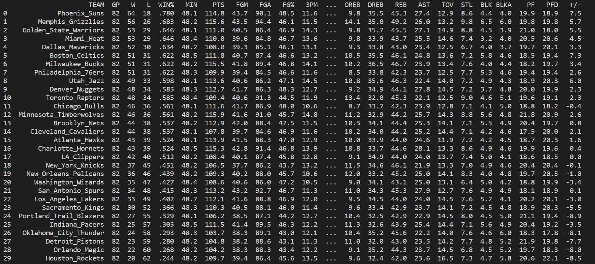
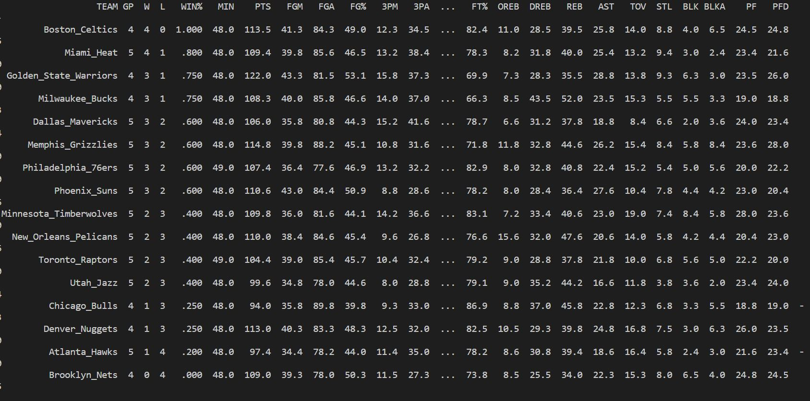

Ciencia de Datos aplicado a la NBA playoffs
Maria Cristina Sánchez De la Cruz.
Ciencia de datos.
Facultad de ciencias fisico matematicas.
|
Ciencia de Datos aplicado a la NBA playoffsMaria Cristina Sánchez De la Cruz. Ciencia de datos. Facultad de ciencias fisico matematicas. |
La National Basketball Association, más conocida simplemente por sus siglas NBA, es una liga privada de baloncesto profesional que se disputa en Estados Unidos desde 1949. Por su naturaleza veloz, el basketball era uno de los deportes más complicados de analizar ya que no se podía realizar un registro certero de las estadísticas de juego por las infinitas interacciones entre los jugadores. No obstante, en el 2009 la liga de baloncesto implementó un sistema de video que capturaba los movimientos de cada jugador y la pelota en la cancha 25 veces por segundo, información a la que los analistas comenzaron a tener acceso para determinar quiénes jugaban un papel importante en las victorias de cada equipo. En los últimos años se han instalado sensores en los tableros que identifican el lugar exacto en el que la pelota los golpeó con el fin de determinar con exactitud los patrones y precisión de tiro de los jugadores. Así mismo, se ha alentado el uso de dispositivos que monitorean los niveles de fatiga en los basquetbolistas para prevenir posibles lesiones. La importancia del análisis de datos en la NBA es tanta que ha dado origen a partidos con estrategias cada vez más sofisticadas que han llevado a un equipo como Golden State Warriors a las finales por cinco años consecutivos. Se estima que la industria de análisis de datos deportivos alcance un valor de cuatro billones de dólares en 2022.
Sistema de competición
En la temporada regular cada equipo disputa 82 partidos, divididos en partes iguales entre encuentros de local y visitante. En el mes de abril finaliza la temporada regular. Los Playoffs de la NBA consiste en cuatro rondas de competición entre dieciséis equipos repartidos en la Conferencia Oeste y la Conferencia Este, ocho equipos por cada Conferencia. Los ganadores de la Primera Ronda (o cuartos de final de conferencia) avanzan a las Semifinales de Conferencia, posteriormente a las Finales de Conferencia y los vencedores a las Finales de la NBA, disputadas entre los campeones de cada conferencia. Las series de playoffs siguen un formato de competición. Cada eliminatoria es al mejor de siete partidos, avanzando de serie el primero que gane cuatro partidos, mientras que el perdedor es eliminado de los playoffs. En la siguiente ronda, el equipo ganador juega contra otro de su misma conferencia. Así, todos excepto uno son eliminados de los playoffs en cada conferencia. En cada ronda (incluidas las finales de la NBA), se sigue el modelo 2-2-1-1-1, queriendo decir que el equipo que tenga la ventaja de campo jugará en casa los partidos 1, 2, 5 y 7, mientras que su rival lo hará en los partidos 3, 4 y 6. En la ronda final, se enfrentan los campeones de cada conferencia al mejor de siete partidos. El primero que consiga vencer en cuatro partidos, se le conocerá como el campeón de la NBA. Se disputa anualmente en junio.
Hacer un análisis predictivo basado en la probabilidad que tiene cada equipo de ganar al enfrentarse en los partidos playoffs. Tomando estadisticas de la temporada regular.
Para analizar los datos de los equipos participantes en la nba de la presente temporada, se realizo web scrapping de la pagina oficial, en el apartado de estadisticas. Utilizando python con la libreria selenium para hacer el web scrapping, se guardan los datos en un archivo csv, se limpiaron los datos y guardaron en data frames utilizando pandas.
Data frame Regular Season.
Data frame PlayOffs.
Se utiliza el porcentaje de juegos ganados por cada equipo como una probabilidad de ganar un partido en los playoffs.


https://ideasfrescas.com.mx/analitica-en-la-nba/
https://es.wikipedia.org/wiki/National_Basketball_Association